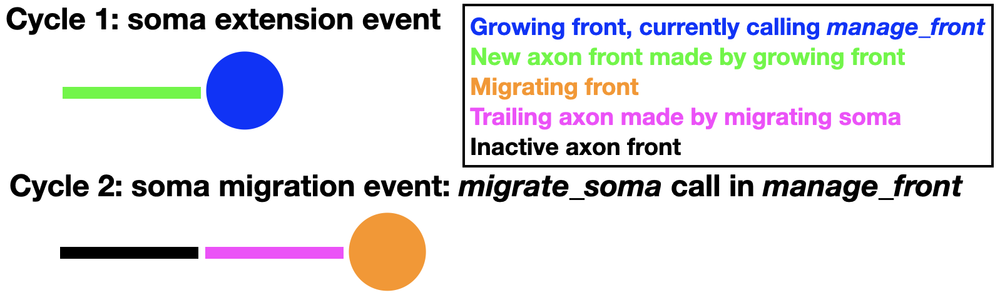

Basic Tutorial¶
Modeling growth¶
Growth is simulated in NeuroDevSim by creating new fronts that will become the child of the front calling self.manage_front. This tutorial section focuses on implementing specific kinds of phenomenological growth, it assumes that the reader understands the coding style introduced in Getting started.
Front extension¶
Front extension is done by the add_child method. It is the simplest way to grow a neuron. It just requires a coordinate new_pos for the new front:
def manage_front(self,constellation):
...
while count < 100:
new_dir = ... # do something to get a Point with a new direction
new_pos = self.end + new_dir # compute position of child end
# check for possible collisions
try:
new_front = self.add_child(constellation,new_pos) # make a new front
# make old front inactive: stops growing -> will not call this method again
self.disable(constellation)
return # done for this cycle
except (CollisionError, GridCompetitionError, InsideParentError, VolumeError):
count += 1
continue # pick another new_pos, no attempt to correct the error
The new_front will be a cylinder with new_front.orig == self.end and new_front.end == new_pos. By default, the new front gets the same radius, branch_name and swc_type values as self, but these can easily be changed in the add_child call:
new_front = self.add_child(constellation,new_pos,radius=2.,swc_type=2,branch_name="axon1")
This section deals with successful growth, see Preventing and dealing with collisions for more advanced handling of CollisionError.
The art of front extension is determining the new direction for growth. The easiest approach is to use the unit_heading_sample method that mimics biological growth: growth cones tend to continue along their current path, called heading, with some randomness. The unit_heading_sample returns a Point vector (relative to [0, 0, 0]) that on average falls within a cone centered around the heading of the current front self:
def manage_front(self,constellation):
...
new_dir = self.unit_heading_sample()
The figure below shows different colored directions obtained by 20 calls of unit_heading_sample for the red front.

The size of the cone can be controlled with the width optional parameter, which sets the standard deviation of the Gaussian distribution around zero angle. The default value for width is 55 degrees, based on cat spinal cord motor neurons, and often a smaller cone is desirable:
def manage_front(self,constellation):
...
new_dir = self.unit_heading_sample(width=20)
{kind=link}
As implicit in the name, unit_heading_sample returns a vector that is 1 µm long. Usually one will want to make longer fronts. In general, fronts should be longer than their radius to avoid spurious collision errors. A simple multiplication of new_dir achieves this goal:
def manage_front(self,constellation):
...
new_dir = self.unit_heading_sample(width=20)
new_pos = self.end + new_dir * 10. # compute position of child end
In the figures above, the different front lengths were 40 µm.
As mentioned in Fronts, front extension will often be determined by combining several influencing factors. Each of these factors can be represented by a vector and the resulting new direction will be the sum of those vectors. For example, the following code:
pia = 199 # z coordinate of the pia, an attractive boundary
...
def manage_front(self,constellation):
...
# 1) black arrow: grow in the same direction as self: get the vector direction of self
heading_dir = (self.end - self.orig).norm() # norm returns unit length vector
# 2) light grey arrow: repulsed by another neuron: this requires two steps
# 2a) get a list of positions of all fronts belonging to other nearby neurons, uses the default what="other" option of get_fronts
other_fronts = self.get_fronts(constellation,max_distance=20.)
# 2b) get a direction to the nearest front
if len(other_fronts) > 0: # safe coding!
other = other_fronts[0][0] # closest front
dir_to_other = (other.mid() - self.end).norm() # use mid point on other front
else:
dir_to_other = Point(0.,0.,0.) # no direction
# 3) dark grey arrow: attracted by a gradient: we use the numerically most efficient solution
dir_to_pia = Point(0.,0.,pia).norm() # vertical direction
# now combine by scaling and summing these 3 vectors, repulsion is a subtraction
new_dir = heading_dir * 2.0 - dir_to_other + dir_to_pia * 2.0
new_pos = self.end + new_dir # increment from current positon
...
represents the vector addition in the figure below.

Terminal branching¶
Terminal branching occurs at the growth tips, another form of branching that happens in older parts of the neuron is described in Interstitial branching. Terminal branching is in its simplest form very similar to Front extension but more than one front is created:
def manage_front(self,constellation):
...
points = ... # generate a list of points for new_front.end
rad = self.taper(0.8) # decrease radius
num_branch = 0 # count number of branches
for p in points: # make 2 branches
...
try:
new_front = self.add_child(constellation,p,radius=rad) # make a new front
num_branch += 1 # success
if num_branch == 2: # enough branches made
self.disable(constellation)
return # completed this call
except (CollisionError, GridCompetitionError, InsideParentError, VolumeError):
continue # pick another point, no attempt to correct the error
...
Note that the radius of the new fronts was decreased by 0.8 * self.radius using the taper method. The order of the new fronts is automatically increased by one after each branching event.
Directions for the new branches are chosen with a similar procedure as described in Front extension but using the unit_branching_sample method. unit_branching_sample returns a given number of directions that have an angle relative to the heading of the calling front (if it is cylinder) and a minimal separation between each possible pair. This results a biological branching pattern, the directions are again obtained from normal distributions based on cat spinal cord motor neurons:
points = self.unit_branching_sample(5) # generate more points than needed
An example of default unit_branching_sample:

unit_branching_sample can generate a maximum of 20 separated directions. The mean and width of both the branching angle and the separation angle can be changed by the user, see simulator module.
Another requirement is to decide when to branch. The simplest approach is to draw a random number:
def manage_front(self,constellation):
...
if numpy.random.random() < 0.05: # branch
points = self.unit_branching_sample(5)
...
else: # just extend the front
new_dir = self.unit_heading_sample(width=20)
...
This can be made fancier by making the branching probability order-dependent:
def manage_front(self,constellation):
...
if self.order > 5:
bif_prob = 0.03
else: # minimal order for non-somatic front is 1
bif_prob = 0.6 / (self.order * 2.)
if numpy.random.random() < bif_prob: # branch
points = self.unit_branching_sample(5)
...
else: # just extend the front
new_dir = self.unit_heading_sample(width=20)
...
Another approach is to make branching dependent on the environment, for example which cortical layer the front occupies.
Branch termination¶
Growth of a dendritic or axonal branch can be terminated by disabling the front at its tip:
def manage_front(self,constellation):
...
self.disable(constellation) # make inactive and stop growth
return
Obviously a decision is required on when to terminate growth. This is usually done based on random numbers:
def manage_front(self,constellation):
...
if numpy.random.random() < 0.02: # terminate
self.disable(constellation) # make inactive and stop growth
return
Another termination condition can be cumulative distance from the soma path_length:
def manage_front(self,constellation):
...
if self.path_length > 500.: # terminate
self.disable(constellation) # make inactive and stop growth
return
or use self.order, constellation.cycle, etc. An unsolvable CollisionError may also be a reason to terminate growth.
Interstitial branching¶
Interstitial branching is the process where a branch sprouts from a neuron segment that is not a growth cone, this happens more frequently in axons than in dendrites. Simulating interstitial branching is similar to terminal branching but requires careful handling of active and growing status of the parent front. The first step is to not disable the future parent front after it completes its initial front extension:
def manage_front(self,constellation):
...
elif self.swc_type == 4: # apical dendrite: can sprout obliques later
...
try:
new_front = self.add_child(constellation,new_pos,radius=rad) # make a new front and store it
if (self.path_length < 50.): # close to soma, no interstitial growth
self.disable(constellation)
# other new_front are not disabled
return # done for this cycle
except (CollisionError, GridCompetitionError, InsideParentError, VolumeError):
...
In the example code above, taken from the Interstitial Growth notebook, this is done conditionally: only apical dendrite fronts that are some distance from the soma are not disabled.
The interstitial growth itself is handled similarly to front extension but needs to be made a rare event as it should happen for only a few fronts:
def manage_front(self,constellation):
...
elif self.swc_type == 4: # apical dendrite: can sprout obliques later
...
if np.random.random() < 0.0025: # make oblique dendrite
...
try:
new_front = self.add_child(constellation,new_pos,radius=rad,swc_type=8)
self.disable(constellation) # stop interstitial growth
return # done for this cycle
except (CollisionError, GridCompetitionError, InsideParentError, VolumeError):
...
Obviously the code needs to distinguish between front extension and interstitial growth, this can be done by tracking self.num_children:
def manage_front(self,constellation):
...
elif self.swc_type == 4: # apical dendrite: can sprout obliques later
if self.num_children == 0: # initial extension of apical dendrite
# front extension code
...
else:
# interstitial branching code
...
It is easy to generate a growth direction for the oblique dendrite that is close to perpendicular to the apical one by requesting a mean angle of 90 degrees for unit_heading_sample:
rnd_dir = self.unit_heading_sample(mean=90,width=10) # close to perpendicular
new_pos = self.end + rnd_dir * 4.0
It may also be desirable to prevent sprouting of additional oblique dendrites within a given distance of the new one:
def manage_front(self,constellation):
...
elif self.swc_type == 4: # apical dendrite: can sprout obliques later
...
if np.random.random() < 0.0025: # make oblique dendrite
...
rnd_dir = self.unit_heading_sample(mean=90,width=10) # close to perpendicular
new_pos = self.end + rnd_dir * 4.0
try:
new_front = self.add_child(constellation,new_pos,radius=rad,swc_type=8) # make a new front and store it
self.disable(constellation) # stop interstitial growth
# stop interstitial branching within 10 µm distance
neighbors = self.get_neighbors(constellation,10.,branch_stop=True)
for front in neighbors:
if front.is_active():
front.disable(constellation) # stop interstitial growth
return # done for this cycle
except (CollisionError, GridCompetitionError, InsideParentError, VolumeError):
get_neighbors will return a list of fronts that is within a 10 µm path_length distance of self, in both somatopetal and somatofugal directions.
Finally, if oblique growth should occur only at much later developmental stages, it is more efficient to disable the future parent till the cycle in which oblique growth can start:
def manage_front(self,constellation):
...
elif self.swc_type == 4: # apical dendrite: can sprout obliques later
...
try:
new_front = self.add_child(constellation,new_pos,radius=rad) # make a new front and store it
if (self.path_length < 50.): # close to soma, only extension
self.disable(constellation) # no interstitial growth
else:
self.disable(constellation,till_cycle_g=100) # delayed interstitial growth
return # done for this cycle
except (CollisionError, GridCompetitionError, InsideParentError, VolumeError):
...
The till_cycle_g optional parameter disables till the given cycle, at which time the front is made active again and set to growing. Similar code can be used to interrupt any type of growth.
Modeling neuron pruning¶
In development, pruning of neuronal structures can be as important as growth. This is supported by the retract method and retract_branch method. Either can be called from manage_front and will result in the retraction of one or more fronts at the end of the cycle, after all manage_front calls have completed. Data about the deleted fronts will still be present in the simulation database with their dead value set to the cycle when the retraction method was called. Examples can be found in the Retraction notebook.
The simplest one to use is the retract_branch method. It is called for one of the children of self and will remove that child and all its descendants:
def manage_front(self,constellation):
...
self.retract_branch(constellation,child)
...
child should be a child of self.
Whether such an approach is sufficiently realistic depends on the implicit duration of a cycle. If it is very long, like days, then complete retraction of a neuronal branch may be biologically feasible in this period. But if it is on the order of hours or less, this is no longer realistic. Then it may be better to delete fronts gradually over consecutive cycles, using the retract method. This can only be called on self, with the condition that self has no children:
def manage_front(self,constellation):
...
self.retract(constellation) # remove self from the simulation
return # do not try to do anything else with self
If the parent is also to be retracted and while is not currently active, it should be activated:
def manage_front(self,constellation):
...
self.enable_parent(constellation) # enable parent
self.retract(constellation) # retract self
return # do not do anything else with self
If instead, all to be retracted fronts are active anyway then self.has_child_retracted() may be useful to detect that a child was retracted, see Read-only status flags. Alternatively, one can just check for self.num_children==0.
The retract method can also be used to remove a single front of a growing process that got stuck. But unless the parent is activated, growth will stop. To continue growth the parent of self should be enabled and set for growth, this can be done with a single method call:
def manage_front(self,constellation):
...
self.enable_parent(constellation,growing=True) # enable parent and flag for growth
self.retract(constellation) # retract self
return # do not do anything else with self
...
Environment cues¶
Querying the environment for cues that affect Front growth is an important component of a simulation. During a manage_front call, the following data can be obtained:
Location of all nearby
Frontof the sameNeuron:get_frontsmethod, useful to model self-repulsion between dendrites.Location of all nearby
Frontof otherNeuron:get_frontsmethod, useful to model attraction or repulsion by other neuron dendrites or axons.Location or local concentration of
Substrate:get_substratesmethod, simulates chemical attraction independent ofFrontstructures.a CollisionError: contains information about the colliding
Front, see Preventing and dealing with collisions.
get_fronts method¶
get_fronts is a Front method, usually called by self. It returns a list of tuples: (Front, distance), where distance is the shortest distance between self (or the calling front) and Front. By default, this list will be sorted with nearest fronts first and only fronts within a range of 100 µm will be searched. With optional parameter returnID=True (ID, distance) tuples will be returned instead.
The main parameter for get_fronts is the optional what, a string that determines which fronts will be returned:
‘self’: get fronts belonging to same neuron as self, excluding all up to second order ancestors and descendents.
‘self+’: get all fronts within max_distance belonging to self.
‘name’: get fronts belonging to neurons with a name (wildcard), not including same neuron as self.
‘other’: get fronts that do not belong to self (default).
‘type’: get fronts belonging to a type of neuron specified in name, not including same neuron as self.
See simulator module for complete documentation of the get_fronts method.
A simple example of self-repulsion, only by nearby fronts within 20 µm:
def manage_front(self,constellation):
others = self.get_fronts(constellation,what="self",max_distance=20.)
if others: # nearby fronts of same neuron found, excluding parent and children
nearest = goals[0][0] # get nearest front of same neuron
dir_to_repel = nearest.mid() - self.end # compute direction to nearest front
else: # no repelling fronts found
dir_to_repel = Point(0.,0.,0.) # no repulsion
new_pos = self.end + self.unit_heading_sample(width=20.) * 5. - dir_to_repel.norm() * 2.
A realistic self-repulsion model has of course to deal with all nearby fronts, not just the nearest one, which may not be trivial.
An example of attraction to a named neuron, from the Environment notebook:
def manage_front(self,constellation):
goals = self.get_fronts(constellation,what="name",name="attract_neuron")
# use first of the list
if goals:
goal_front = goals[0][0] # get nearest atract_neuron front
dir_to_goal = goal_front.end - self.end # compute direction to nearest front
else: # deal with absence of attractor
dir_to_goal = self.unit_heading_sample(width=10.)
new_pos = self.end + dir_to_goal.norm() * 5.0
The run-time of get_fronts scales with the number of neurons and fronts in the simulation and may become quite slow for very large simulations. Therefore, an alternative faster search method is implemented if only nearby fronts are desired, this method will be automatically used if optional parameter max_distance <= Admin_agent.grid_step.
Inside versus outside of a front¶
The code examples above computed a direction to one of the Front coordinates, which is inside the target front. This is fine for repulsion, but if the goal is to grow close to the target front, for example to make a synapse, points on the surface of the front are more relevant. This can be obtained with the surface_point_to method that returns a point on the surface of the calling front in the direction of a given other point:
def manage_front(self,constellation):
# find a front to grow toward
goals = self.get_fronts(constellation,what="name",name="axons")
if goals:
nearest = goals[0][0] # get nearest axon front
goal = nearest.surface_point_to(self) # point on surface of nearest towards front calling manage_front
direction = goal - self.end # direction to goal on nearest
distance = direction.length() # distance to goal
By default surface_point_to returns a point halfway along the length of a cylindrical front (for a sphere it is the nearest surface point). This can be changed either to a random location (optional parameter mid=False) or to a specific location along the length (e.g. for first third, optional parameter pos=0.33).
Finally, it is also possible to request a point some distance away from the front surface using the offset optional parameter. This may be helpful to prevent a collision with the target nearest:
def manage_front(self,constellation):
...
goal = nearest.surface_point_to(self,offset=0.2)
try:
new_front = self.add_child(constellation,goal) # make a new front ending close to nearest
...
Chemical cue using Substrate¶
Substrate implements modeling of chemical cues that can be placed anywhere in the simulation volume. They can be found with the get_substrates method, always based on the name of the Substrate:
def manage_front(self,constellation):
...
substrates = self.get_substrates(constellation,"attractor")
if substrates:
closest = substrates[0][0]
cdistance = substrates[0][1]
else:
...
Similar to get_fronts, this method returns a list of (Front, distance) or (ID, distance) tuples.
Substrate can be used in two different ways, both are illustrated in the Environment notebook.
The simplest is to use it as a deterministic cue and compute the direction to it:
dir_to_sub = closest.orig - self.end # compute direction to attractor
new_pos = self.end + dir_to_sub.norm() * 5.0
A bit more sophisticated is to include a dependence on distance:
if cdistance <= 2.: # go directly
new_pos = closest.orig
elif cdistance <= 5.: # approach directly in small steps
new_pos = self.end + dir_to_sub.norm() * 2.0
else: # noisy approach
new_pos = self.end + unit_sample_on_sphere() * 2.0 + dir_to_sub.norm() * 2.0
The above code assumes that get_substrates is called every cycle, a faster alternative is to store the ID as illustrated in the Environment notebook but then cdistance has to be computed every cycle.
A completely different approach to using Substrate is stochastic, this assumes that Substrate was initiated with the relevant parameters. This approach uses the diff_gradient_to method to compute a stochastic number of substrate molecules at a given Point and the direction towards the substrate at this point:
def manage_front(self,constellation):
...
substrates = self.get_substrates(constellation,"attractor")
# nmols is stochastic integer number of molecules, sdir is a Point vector towards substrate
n_mols,sdir = diff_gradient_to(self.end,substrates,constellation.cycle)
# stronger signal produces less noisy direction vector
dir_to_attractor = sdir * n_mols + rnd_dir * 1.5
new_pos = self.end + dir_to_attractor.norm() * 3.
Depending on how Substrate was initiated, the stochastic number of molecules is either computed for a continuously producing point source in infinite medium (substrate.rate > 0.) or for an instantaneous point source in infinite medium (substrate.rate = 0.). Note that these calculations make strong simplifying assumptions and may therefore not be very realistic, especially in small crowded environments or with multiple locations of the substrate. An example of the stochastic number of molecules returned at different locations by diff_gradient_to for the steady state of a continuously producing source in the upper right corner is shown in the figure:

The steady state was obtained by passing -1 instead of the cycle:
n_mols,sdir = diff_gradient_to(self.end,substrates,-1)
Note that the entire substrates list is passed to diff_gradient_to. If this list contains multiple substrate sources, by default diff_gradient_to will pick the nearest one, but there is also an option to compute an average location (optional parameter what="average"). Note that diff_gradient_to always expects a list, but this can also be just a list of substrates (e.g. [Sub1,Sub2] or [Sub1]) instead of the list of tuples returned by get_substrates. The level of stochasticity can be controlled by the optional size parameter that controls the size of the sampling box.
Preventing and dealing with collisions¶
The emphasis on interactions with the environment entails that for most models dealing with collisions is an important part of the code.
Standard behavior¶
The robust approach is to let collisions happen and deal with the resulting CollisionError. The code below from the Beginner’s Tutorial shows an example where new_pos is varied randomly till no collision occurs:
def manage_front(self,constellation):
...
count = 0 # counts number of add_child trials
while count < 100:
extension = self.unit_heading_sample(width=20)
new_pos = self.end + extension * 5. # compute position of child end
# check for possible collisions
try:
new_front = self.add_child(constellation,new_pos) # make a new front and store it
...
except CollisionError as error:
count += 1
continue # pick another new_pos, no attempt to correct the error
except (GridCompetitionError, InsideParentError, VolumeError):
count += 1
continue # pick another new_pos, no attempt to correct the error
print ("Warning: failed extension for of",self.get_neuron_name(constellation))
Obivously this simple approach is not guaranteed to succeed, especially in crowded environments. It is always important to deal with failure of the method, in this example a warning is printed.
Getting more information about collisions¶
To deal more intelligently with collisions it is important to know which Front caused the collision, this information is available in the CollisionError:
def manage_front(self,constellation):
...
except CollisionError as error:
print (self,"collides with",error.collider,"with distance",error.distance)
...
Note that standard behavior is to return only the first Front identified as causing a collision, there may be other Fronts that also cause collisions and these may even be closer by. Usually collisions with older fronts will be detected first.
It is possible to force a search for all colliding fronts before triggering an error:
def manage_front(self,constellation):
constellation.only_first_collision = False
...
except CollisionError as error:
if error.only_first:
print (self,"collides with",error.collider,"with distance",error.distance)
else:
print (self,"collides with:")
for i in range(len(error.collider)):
print (" #",i,":",error.collider[i],"with distance",error.distance[i])
...
The constellation.only_first_collision attribute is a boolean that is initialized to True. If this is set to False before the call to add_child the simulator will check for all collisions with proposed new_front before returning with CollisionError. Note that coding this correctly is not simple:
constellation.only_first_collision is local to each parallel processor and cannot be set globally. There are two strategies possible to using it:
either set it at the begin of each
manage_frontcall as in the example above. This will affect alladd_childcalls and slow down the simulation.change it to False just before the
tryandexceptstatements for a selectedadd_childcall and reset to True afterwards, this will affect only that oneadd_childcall.
depending on the setting of constellation.only_first_collision CollisionError returns either a
Frontor a[Front,]as collider, same for distance. The collider list is unsorted.because the setting of constellation.only_first_collision may be ambiguous CollisionError contains its value used in its first_only attribute and will always print correct information.
Based on the information provided by CollisionError sophisticated collision resolution routines can be written.
Automatic collision resolution¶
Some fairly simple collision conditions can be very hard to solve properly by random search. An example is a dendrite or axon trying to grow past a much larger soma, biological growth cones will eventually succeed in making an arc around such a structure, but this requires a sophisticated simulation of chemical cues to work in NeuroDevSim. Instead, the solve_collision method provides a phenomenological solution that respects the original direction of growth. It is called as:
points = self.solve_collision(constellation,new_pos,error)
solve_collision returns a list of Point that were free at the time of the call. To generate the solution proposed the add_branch method should be used, which will create a series of a few fronts if possible:
def manage_front(self,constellation):
...
while count < max_count:
new_pos = ...
try:
new_front = self.add_child(constellation,new_pos)
self.disable(constellation) # success -> disable this front
return
except CollisionError as error:
points = self.solve_collision(constellation,new_pos,error)
if points: # one or more points was returned
try:
new_fronts = self.add_branch(constellation,points)
# at least one new front made
self.disable(constellation) # success -> disable this front
return
except CollisionError as error:
print (self.get_neuron_name(constellation),self,"solve_collision collides with",error.collider)
count += 1
continue # generate another new_pos, no attempt to correct the error
except (GridCompetitionError,InsideParentError,VolumeError):
count += 1
continue # generate another new_pos, no attempt to correct the error
else:
count += 1
continue # generate another new_pos
except (GridCompetitionError,InsideParentError,VolumeError):
count += 1
continue # generate another new_pos, no attempt to correct the error
...
Note that solve_collision may fail and return an empty list. add_branch will try to instantiate fronts for every coordinate returned by solve_collision but this may fail. If at least one front can be made add_branch will return normally and the length of the new_fronts list returned gives the number of Front created, otherwise it will return with a new CollisionError. The reason that add_branch may fail partially or completely is that other processors may be instantiating new Front at coordinates needed after solve_collision returns and before or while add_branch is called.
Examples of the use of solve_collision can be found in the Migration notebook.
Modeling soma migration¶
migrate_soma allows somata to move through the simulation volume, simulating their migration before they arrive at their final location and grow dendritic trees. Migrating somata cannot have children except for very specific ones. Examples of all migration modes can be found in the Migration notebook.
Simple migration¶
No soma children are allowed for simple migration. A new coordinate new_pos is provided for the soma to migrate to:
def manage_front(self,constellation):
...
try:
mig_dir = # compute a direction to migrate to
new_pos = self.orig + mig_dir * mig_step
self.migrate_soma(constellation,new_pos)
return
except (CollisionError,GridCompetitionError,VolumeError):
# deal with error
...
This will move the soma to a new location:

Note that because somata are spherical, self.orig should be used in the computation of new_pos. As for front extension, migration can only occur if the prospective location is free and within the simulation volume. If this is not the case, repectively CollisionError or VolumeError will be triggered.
Similarly, migrate_soma can trigger a GridCompetitionError. To make this much less likely, it is important to make sure that self.is_migrating() == True. In most cases the migrating flag will already be set when the soma is created:
admin.add_neurons(MigrationFront,"neuron",1,[[10,50,20],[10,50,20]],5.,migrating=True)
If migration should be activated only later in the simulation, the proper Front status flags should be set in the cycle with, for example, set_migrating() before the first call to migrate_soma.
In addition, migrate_soma can trigger specific BadChildError or ActiveChildError if inappropriate children are present or NotSomaError if self is not a soma.
Filipodium migration¶
In reality, cell bodies rarely migrate by themselves. Instead they usually extend processes that can sample the environment and follow one of these to migrate along. This sequence can be mimicked using the filipodium migration option:

As one can see in the figure, the soma first extends a filipod front as its only child and that front extends another filipod front. Now the soma can migrate to the location of its filipod child, which is removed. Note that the order of cycles 3a and 3b is actually random, so at the time of soma migration the filipod extension may already have occurred. Cycles similar to 3a and b can now be repeated endlessly until the soma arrives at its location. The corresponding code for migration is:
def manage_front(self,constellation):
...
try:
self.migrate_soma(constellation,None,filipod=True)
return
except (CollisionError,GridCompetitionError,VolumeError):
# deal with error
...
For this to work properly the soma can have only a single child with swc_type 12 (filipodium). Note that no new_pos is given because instead the coordinates of the filipod child will be used to move the soma to a location where it touches the filipod end coordinate. The filipod child is removed and will have its is_retracted() flag set and its death value in the database will be updated to the current cycle. To have continuous migration, additional filipod children must have already been grown, as in the figure above. The filipod that originally was the grandchild of the soma, will become its child after the migration event. An example of full code simulating all these events can be found in the Migration notebook. If no filipod grandchild exists, the soma will have to grow a new filipodium before migrate_soma can be called again with the filipod=True option.
Note that a longer filipod with more fronts can be grown than in the example. The filipod can also, transiently, contain branch points but one of the branches needs to be retracted before the soma reaches the branch point as only a single filipod soma child is allowed. Filipodium migration can be combined with trailing axon migration, in which case the soma will have two children.
Filipod growth for a migrating soma uses soma.radius instead of filipod.radius for collision detection in add_child to make sure that there is enough space for future migration.
Trailing axon migration¶
Some somata leave an axon behind when they migrate. This can also be simulated by using the trailing axon migration option:
{kind=link}
To enable this mode the soma must have extended a first axon front (swc_type 2) as its only child. Once an axon child is present, additional trailing axon fronts can be made during migration:
def manage_front(self,constellation):
...
try:
mig_dir = # compute a direction to migrate to
new_pos = self.orig + mig_dir * mig_step
self.migrate_soma(constellation,new_pos,trailing_axon=True)
return
except (CollisionError,GridCompetitionError,VolumeError):
# deal with error
...
This will insert a new trailing axon front (swc_type 2) between the original axon front and the soma. This new trailing axon front will become a child of the soma and the original axon front becomes its grandchild. These paternity changes are entered into the database. An example of full code simulating all these events can be found in the Migration notebook. In the example above the first axon front is made inactive, but nothing prevents it from growing also further, extending the axon away from the migrating soma.
Trailing axon migration can be combined with Filipodium migration, in which case the soma will have two children.
Neurons¶
Neuron is a class that contains information about all fronts belonging to the same neuron. It is automatically instantiated for each soma that is created by Admin_agent.add_neurons and keeps track of the number of fronts, retracted fronts and synapses (for SynFront only):
def manage_front(self,constellation):
...
neuron = self.get_neuron(constellation)
print (self.get_neuron_name(constellation),"has",neuron.num_fronts,"fronts")
...
num_fronts and other similar Neuron attributes are updated at the end of each cycle, so the code above reports the number of fronts at the end of the previous cycle.
Neurons also contain two modifiable attributes that control synaptic input at Synapses: firing_rate and CV_ISI. The first is the mean firing rate (over the duration of a cycle) and the second its variance, expressed as the coefficient of variation of the interspike intervals. These can be modified at any time with specific methods:
def manage_front(self,constellation):
...
neuron = self.get_neuron(constellation)
neuron.set_firing_rate(constellation,5.) # increase firing_rate from default 1.
neuron.set_CV_ISI(constellation,1.) # increase CV_ISI from default 0.
print (self.get_neuron_name(constellation),": firing rate",neuron.firing_rate,"with CV",neuron.CV_ISI)
...
Changing firing_rate or CV_ISI has effects only for the synaptic input as shown in Using syn_input. Note that only the initial value of zero firing_rate and CV_ISI is automatically stored in the database, to store updated values admin.attrib_to_db should be used as described in Storing additional attributes.
Synapses¶
Growth based synapses are possible when fronts are derived from the SynFront subclass. A Synapse can be purely structural but can also be used as an input signal. The use of synapses is extensively demonstrated in the Synapses notebook.
Making synapses¶
A synapse can be made between any two non-migrating fronts that are not more than 5 µm apart. In making the synapse the user defines which front is presynaptic, the other is postsynaptic. At present, there can be only one synapse per front.
To make a synapse use the SynFront.add_synapse method with a known other_front. The weight determines whether it is excitatory (positive float) or inhibitory (negative float):
def manage_front(self,constellation):
...
# make excitatory synapse from presynaptic asynfront1 to postsynaptic other_front1
asynfront1.add_synapse(constellation,other_front1,1.)
# make inhibitory synapse from postsynaptic asynfront2 to presynaptic other_front2
asynfront2.add_synapse(constellation,other_front2,-1.,presynaptic=False)
...
The presence of a synapse can be detected with the self.has_synapse() method and its properties by self.get_synapse(constellation), self.is_presynaptic(constellation) or self.is_postsynaptic(constellation):
def manage_front(self,constellation):
...
if self.has_synapse():
synapse = self.get_synapse(constellation)
if self.is_presynaptic():
print (self,"is presynaptic to",constellation.front_by_id(synapse.post_syn))
else:
print (self,"has postsynaptic to",constellation.front_by_id(synapse.pre_syn))
...
Note that synapses store the identity of the presynaptic (pre_syn attribute) and postsynaptic (pos_syn attribute) fronts as ID.
Using syn_input¶
Each postsynaptic SynFront will update its its syn_input before the start of each cycle and this can be used as an input signal in manage_front. Note that the synaptic input is an average over the entire previous cycle.
The sign of syn_input is determined by whether the synapse is excitatory (positive weight) or inhibitory (negative weight):
def manage_front(self,constellation):
...
if self.has_synapse():
synapse = self.get_synapse(constellation)
if synapse.weight > 0.:
print (self,"has an excitatory synapse")
elif synapse.weight < 0.:
print (self,"has an inhibitory synapse")
...
The value of syn_input combines presynaptic properties, firing_rate and CV_ISI, with synaptic weight. In the absence of stochasticity (CV_ISI == 0.) it reflects an average over time: syn_input = firing_rate * weight. If CV_ISI > 0. syn_input is stochastic and drawn from a normal distribution with mean syn_input computed as shown before. The presynaptic firing_rate and CV_ISI are set for the Neurons.
The weight of the synapse can be changed to simulate synaptic plasticity:
def manage_front(self,constellation):
...
if self.is_postsynaptic():
synapse = self.get_synapse(constellation)
synapse.set_weight(constellation,5.)
...
By correlating presynaptic firing rate with postsynaptic responses correlation based synaptic plasticity rules can be implemented. Note, however, that these operate on a slow developmental time scale, it is not possible to simulate spike-timing dependent plasticity in NeuroDevSim!
Note that only the initial value of weight is automatically stored in the database, to store updated values of weight admin.attrib_to_db should be used as described in Storing additional attributes. Similarly, admin.attrib_to_db can be used to store syn_input values.
Substrate¶
Substrate is a class that implements chemical cues at different locations. It is the only class in NeuroDevSim that can be directly initiated with syntax Substrate(name,location,creation_cycle,amount). For example:
sub = Substrate("attractor",Point(10.,10.,10.),0,1)
creates a substrate named attractor at coordinate (10.,10.,10.) which will exist from the beginning of the simulation (cycle 0) and consists of a single molecule. Such a simple substrate is sufficient for a deterministic Chemical cue using Substrate.
However, before it can be used it should be added to the simulation. This can be done in two different ways: in the main code or by a Front during its manage_front call. The first case uses Admin_agent.add_substrate as shown in the Environment notebook:
if __name__ == '__main__':
...
# add substrate information, in this case a single random point
x = 20 + 60 * np.random.random()
y = 20 + 60 * np.random.random()
# instantiate a substrate
sub = Substrate("attractor",Point(x,y,99.),...)
# add it to the simulation volume
admin.add_substrate(sub)
Alternatively, it can be produced by a Front that uses constellation.add_substrate:
def manage_front(self,constellation):
...
sub = Substrate("attractor",self.mid(),0,1)
constellation.add_substrate(sub)
though this is not enforced, the assumption is that the substrate is produced close to the front, in this case at its center.
Either add_substrate can be called with a single Substrate or a list of Susbstrate as parameter. Multiple instantiations of Substrate with the same name at different locations can be created and added. Once registered by add_substrate, all substrate of a given name can be found with the get_substrates as described in the Chemical cue using Substrate.
In addition to the simple definitions used till now, additional parameters can be supplied which allow for stochastic use of Substrate with the diff_gradient_to method described in Chemical cue using Substrate and illustrated in Environment notebook. For this stochastic approach a diffusion constant diff_c in µm^2/cycle needs to provided:
sub = Substrate("attractor",Point(10.,10.,10.),constellation.cycle,1000000000,diff_c=30.)
This will place a point source of 1,000,000,000 molecules of attractor at the given location on the given cycle, which will then start to diffuse away. The computed gradient will evolve as the cycle parameter passed to diff_gradient_to increases.
An alternative is to use a continuously producing point source. In that case the amount is ignored and, instead, an optional rate parameter is provided:
sub = Substrate("attractor",Point(10.,10.,10.),constellation.cycle,0,rate=1000.,diff_c=30.)
For the continuously producing point source, stochastic concentratons can be queried by diff_gradient_to either some cycles after the start or using a steady state gradient, see Chemical cue using Substrate.
SWC types used in NeuroDevSim¶
The Front.swc_type refers to entries in a column of the SWC file format, which was defined in Cannon et al. 1998. NeuroDevSim uses standard values defined in this paper and on NeuroMorpho.org, but also adds several custom defined SWC types:
type |
structure |
comment |
|---|---|---|
0 |
undefined |
defined in Cannon et al. |
1 |
soma |
defined in Cannon et al. |
2 |
axon |
defined in Cannon et al. |
3 |
(basal) dendrite |
defined in Cannon et al. |
4 |
apical dendrite |
defined in Cannon et al. |
5 |
custom |
defined in Cannon et al. |
6 |
neurite |
defined by NeuroMorpho.org |
7 |
glial process |
defined by NeuroMorpho.org |
8 |
oblique dendrite |
NeuroDevSim definition |
9 |
tuft dendrite |
NeuroDevSim definition |
10 |
smooth dendrite |
NeuroDevSim definition |
11 |
spiny dendrite |
NeuroDevSim definition |
12 |
filipodium |
NeuroDevSim definition |
13 |
spine |
NeuroDevSim definition |
14 |
synaptic bouton |
NeuroDevSim definition |
15-19 |
reserved |
NeuroDevSim definition |
Note that some of these definitions are required for NeuroDevSim to work properly. Somata automatically get swc_type=1, while some of Modeling soma migration depends on proper use of axon (2) and filipodium (12) swc_types.
Plotting the simulation¶
NeuroDevSim can plot during simulations when run in jupyter notebooks by setting plot=True during Admin_agent initialization. Results can also be plotted afterwards from the stored database using the nds_plot or nds_movie commands. All these methods have common settings that are explained here.
Color settings¶
There are several parameters that control how structures in the simulation are colored, selecting from 13 standard colors. By default all somata are black and each neuron has a different color, but because of the small number of colors available several neurons will have the same color in networks with many neurons. The following settings control how colors are used in Admin_agent, nds_plot and nds_movie:
color_scheme : integer : has 4 possible settings:
0 : default, all neurons have different colors, limited by number of colors available. Colors are asigned in order of soma creation.
1 : color determined by neuron_types. All neurons of the same type have the same color, different types have different colors, limited by number of colors available. Useful in network simulations with many different neuron types.
2 : color determined by branch_name. Fronts with different branch_names have different colors, limited by number of colors available. Useful when simulating a single neuron.
3 : a continuous color scale is used (matplotlib ‘rainbow’) to color a scalar attribute. Additional information must be provided in color_data. All fronts that do not have the selected attribute are colored black. An example can be found in the Synapses notebook.
color_data : list with 3 entries : used only for color_scheme==3:
attribute : string : the front attribute to be used for color selection.
min value : float : mimimum value used for color scale (purple color).
max value : float : maximum value used for color scale (red color).
soma_black : boolean : every soma is always colored black (default), used for color_scheme 0-2.
In addition, nds_plot and nds_movie also have a color_scheme==-1 setting. This allows the user to specify a specific color for each neuron in the simulation in a text file, which is defined in neuron_color. The easiest way to do this is to first call the nds_get_color_dict method on the database, this will output a text file containing for each neuron a line with its name and the color selected for color_scheme==0 (optionally color_scheme==1). The user can then edit this text file, being careful to specify colors correctly as shown in the table below, and then run nds_plot or nds_movie with color_scheme==-1.
neuron_color : string : name of text file containing dictionary info by neuron name that specifies color to use for color_scheme==-1 in nds_plot or nds_movie. Use nds_get_color_dict on the database to obtain a valid text file and then edit it.
Available colors and their names¶
These color names should be used in the neuron_color text file.
color |
name used |
|---|---|
black |
‘k’ |
blue |
‘tab:blue’ |
brown |
‘tab:brown’ |
cyan |
‘tab:cyan’ |
gray |
‘tab:gray’ |
green |
‘tab:green’ |
magenta |
‘m’ |
olive |
‘tab:olive’ |
orange |
‘tab:orange’ |
pink |
‘tab:pink’ |
purple |
‘tab:purple’ |
red |
‘tab:red’ |
yellow |
‘y’ |
View settings¶
Properly setting orientation of the camera with azim and elev can improve visibility of relevant phenomena and in complex simulations it can also be helpful to zoom in with box. Finally visibility of small structures can be enhanced with radius_scale or sphere_scale.
azim : float : azimuth in degrees of camera, default -60.
box : list [[left, front, bottom], [right, back, top]]: subvolume to plot, allows to zoom in, default full sim_volume.
elev : float : elevation in degrees of camera, default 30.
radius_scale : float : change thickness of cylindrical fronts, default 1. size equals 2 * radius.
sphere_scale : float : change size of spherical fronts, default 1. size equals radius.
Axes settings¶
One can suppress axes with no_axis or change relative scaling of axes with scale_axis. The latter can be quite important as Matplotlib plots by default a cubic volume, so if not all axes have identical length the default setting will create a distorted plot with some axes compressed. This may, however, squeeze the axis ticks to unlegible text and in that case it is better to turn them off with axis_ticks.
axis_ticks : boolean : show axis ticks, default True.
no_axis : boolean : suppress drawing of axes, default False.
scale_axis : boolean or list of 3 floats : list as [1.0,1.0,1.0] decrease one or more values to change relative scaling of axes, value for largest axis should be close to 1.0; default False. Examples in Real Morphologies notebook.
Efficient tricks¶
This section contains some tricks that did not fit in other parts of the documentation.
Fronts belonging to same neuron¶
The fastest way to check whether two fronts belong to the same neuron is to use the get_soma method on both and compare the results:
def manage_front(self,constellation):
...
soma1 = front1.get_soma(constellation)
soma2 = front2.get_soma(constellation)
if soma1 == soma2: # same neuron
...
else: # different neuron
...
The soma ID, call get_soma(constellation,returnID=True), is the best attribute to store if one needs to store information about another neuron.
To check neuron identity the get_neuron method should be used, to check neuron type use get_neuron_type.
Has a front grown?¶
There is no status flag similar to Front.has_moved() or Front.has_migrated() to check for growth because this can be achieved using the num_children attribute:
def manage_front(self,constellation):
...
if self.num_children > 0: # self has grown
...
else: # self has not grown
...
num_children is always up to date and can be accessed much faster than the result of Front.get_children(constellation).